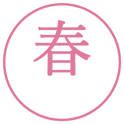
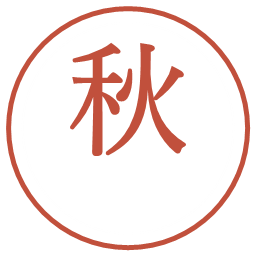
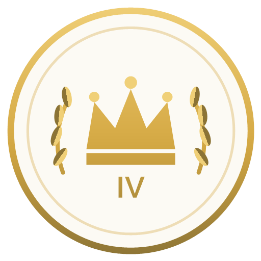

FOR OUR SUPPORTERS
WRESTLE MANAGER / DEV REPORT
この10日間で、
リングは何が変わったか
年間カレンダーが四季で埋まり、試合の採点が作り直され、鳴っている音がほぼ全部入れ替わりました。 その全記録と、これから手をつける予定を一枚にまとめています。
2026.07.17 → 07.26|v1.20 → v1.22
年間カレンダーが四季で埋まり、試合の採点が作り直され、鳴っている音がほぼ全部入れ替わりました。 その全記録と、これから手をつける予定を一枚にまとめています。
細かい修正まで並べると読むのが大変なので、
「遊んでいて気づく変化」だけを9つに絞りました。
春・夏・秋・冬。それぞれの季節末に「その季節にしかない大会」が入りました
これまで空いていた春と秋の枠が埋まり、1年を通してリズムができました。 どの大会も「誰の物語か」で性格を分けてあります。

4チームの総当たり＋決勝。
主役は「組んだ二人」
若手の登竜門。
開催週のズレを直しました

各団体3名の勝ち抜き戦。
主役は「団体そのもの」
一年の総決算。
主役は「その年の頂点」
先鋒・中堅・大将の3名による勝ち抜き戦です。勝ち残った選手は消耗を持ち越したまま次の相手と戦います。 連戦で削られていく様子を見ながら、決勝前に並び順を組み替える——そこが采配のしどころになります。 専用のライブ進行画面と、MVPの受け答え315本を新しく用意しました。

オリンピックのように4年周期でやってくる、全団体16名によるシングル勝ち抜きトーナメント。 全15試合が大一番ルールで、消耗は持ち越し。優勝しても数値的な得はありません。残るのは記録と称号だけです。 山を登っていく形の専用ブラケット画面と、対戦カードごとに変わる関係性のドラマを用意しています。
※ 仮エンブレムです。本番の作画は今後差し替えます「なんでその技で終わったの?」をなくす作業です
クライマックスまで持ち込んだのに、最後の一撃が軽い技だった——という試合がありました。原因は技の抽選の仕組みにあったので、根本から作り直しています。
この手の調整でいちばん怖いのは「演出を良くしたら、強い選手が勝たなくなった」という副作用です。 数千試合ぶんの自動シミュレーションで、勝率が動いていないことを確かめてから入れています。
今回いちばん大きな仕事です
試合が終わったあとに出る試合評価の点数。あれの計算方法を、根っこから設計し直しました。 これまでは「王座戦だから＋◯点」「因縁があるから＋◯点」というふうに、リングの外から点数を足していました。 足し算で盛るのはわかりやすい反面、試合の中身を見ていない点数になってしまいます。
これまで点数は100で頭打ちでした。つまり「歴史に残る一戦」と「すごく良かった試合」が同じ点数になってしまう。 上限を外し、代わりに業界の歴代最高記録を持たせました。 あなたの団体のリングでそれが更新された夜は、新聞の一面がその試合で埋まります。
シングルとタッグは別々の記録として積み上がります。四人が織りなす攻防と、一対一の攻防は、同じ物差しでは測れないためです。
業界が揺れた週は、週明けの通知から違います
ふだんの新聞とは別に、業界全体が動いた出来事だけを扱う枠を作りました。 発生した週の頭に通知が飛び、開くと一面がその記事で埋まっています。読むまで未読バッジが消えません。
記事の文面は毎回すべて書き下ろしています。数字を並べるだけの記事にはしていません。 タッグの記録更新の記事では、勝った二人が組んだ当初のぎこちなさを知っている記者が、その成熟に驚くという書き方をしています。
BGMを32枠に整理し直し、全部作り直しました
まず「このゲームには何種類の場面があるのか」を実際の画面から数え直し、BGMの枠を32に整理しました。 そのうえで83枠ぶんの候補を聴き比べ、採用した74本を製品版として仕上げています。
最後まで残っていたゲームオーバー曲を差し替えたことで、このゲームで鳴る音楽はすべてこの作品のために用意したものになりました。 クレジット表記の音楽欄が空になっています。
効果音のほうはまだこれからです。加工済みの46本のうち、実際に鳴っているのは最高栄誉のジングル1本だけ。 ここが次の大仕事になります（後述のロードマップ参照）。
「触ったときに直す」方式では、触られない画面が永遠に取り残されるので
同じ意味のものが画面ごとに違う見た目をしている、という状態を潰しました。 用途ごとにデザインを決め直してから、その用途に当てはまる画面を一気に書き換える、という進め方です。
| 用途 | これまで | これから |
|---|---|---|
| セリフの吹き出し 27系統 |
8つの画面で吹き出しが画像の下に付いていた。色も背景もバラバラ | 顔の上に、白い吹き出しで、黒い文字。例外なし。逆に地の文やナレーションは白くしないことで、セリフと見分けがつくようにしました |
| 勝敗の表示 31か所 |
「LOSE」「敗」「×」が混在。引き分けの表記もあった | ○＝勝ち／×＝負けに統一。引き分けの表記は撤去しました（このゲームでは引き分けが起きないため、あると誤解を生みます） |
| 選手画像の大きさ | 画面ごとにその場で決めていたので、同じ立場の選手が画面によって大きさが違った | 主役度に応じた5段階の梯子を決め、そこから選ぶだけにしました。一覧に並ぶ丸い顔アイコンも3段階に整理 |
| 団体の見分け | 頭文字の色付き丸で代用していた画面があった | 実際のエンブレム画像を使うように統一。他団体との絡みで「どっちの選手か」が一目でわかります |
| ポップアップの枠 42種 |
重なり順が25通りあり、閉じ方も画面によって違った | 重なりを5階層に整理。背景クリックとESCで閉じるを全部に通しました |
| 選手カード・一覧 | 顔が出ているのに押しても何も起きない画面があった | 顔が出ているなら、押せば詳細が開く。同じ症状で原因が5種類あり、全部潰しました |


左端があなたの団体のエンブレム。10種類の候補から選べます。右の3つは他団体のものです。
「真面目なお嬢様」と「真面目なヤンキー」が同じことを喋っていた問題
これまでセリフの多くは性格だけで枝分かれしていました。ところが実際に喋ってみると、 口調を決めているのは性格ではなく属性のほうだったんです。 結果、「真面目」でくくられた選手が、お嬢様でもヤンキーでも同じ台詞を喋っていました。
※ 上は仕組みを説明するための例です。実際の文面は場面ごとに書き分けています。
埋めたマス目は1,516。既存のセリフは1文字も書き換えず、足すだけの作業です。 これで「口調が指定されていないセリフ」がゼロになりました。
穴埋めとは別に、新しく書き下ろしたセリフもあります。こちらは本数です。
因縁のある相手との試合後コメント71本が、7月21日以降まったく出ていませんでした。復活させています。 宿敵以上の相手を組んだ興行の結果を閉じた直後に出るはずのものです。
得しかしない選択は、選択ではないので
練習で追い込めば伸びる。けれどその負荷は選手の身体に積もっていく——という当たり前を、数字の上でも成立させました。 測ってみると、平均的な選手生命は9.0シーズンから7.0シーズンに縮みました。
このリバランスの過程で、もっと根の深い問題が見つかりました。 「完成して、君臨して、翳る」の“君臨”が、今のゲームには存在しません。 伸びきった直後に衰えが始まってしまう。これは後述のロードマップで扱います。
進行が止まる・戻れない系を優先して潰しました
他団体へ乗り込むとき、同行する2名を自分で選べるようになりました。 会場へ向かう移動シーンを挟み、試合前には画面が敵地の色に染まります。 あちらのホームで戦っているという感触を出したかった部分です。
画面幅に合わせたレイアウトを全面的に入れています。相関図はスマホでは図ではなく一覧表示に切り替わります （小さい画面で線をたどるのは無理があったので）。
数値を捻じ曲げてドラマチックにはしない。— このゲームを作るときの、決めごとのひとつ
だから、本当に奇跡が起きたときの感動は本物になる。
予定なので、順番も内容も変わることがあります。
いま机の上に乗っているものを、優先度の順に並べました。
引退のタイミングを実際に測ってみたところ、困ったことがわかりました。 半分以上の選手が、毎年の抽選に引っかかって消えているんです。 身体はまだ余力を残しているのに、理由が語れないまま去っていく。これがいちばん多い終わり方になっていました。
そこで、終わり方を5つの型に分けて、それぞれの起きる頻度を設計します。 いちばん大事なのは「不意の終わり」を削ることです。これが半分を占めているせいで、他のすべての終わり方が埋もれていました。
| 型 | どんな終わり方か | 頻度の目安 |
|---|---|---|
| A. 静かに去る | 消耗が満ちて、オフシーズンに自分で決める。誰も騒がない | 6割 |
| B. 燃え尽きるまで | 衰えが見えてから踏ん張り、最後の大舞台で活躍して終わる | 2〜3割 |
| C. 壮絶な幕切れ | 大舞台で重傷を負い、二度とリングに上がれなくなる | 10年に1度級 |
| D. 不意の終わり | 理由が語りにくい終わり方。これを削るのが目的です | 5割超 → 1割以下 |
| E. 社長が決める | 衰えの印を見て、あなたが先に引導を渡す。今あるものを、そのまま残します | 変更なし |
Eを残すのは意図的です。「衰え」の表示を見て社長が決める——これがいちばんこのゲームらしい終わり方なので、 エンジンが先回りして奪ってしまわないように設計します。
加工済みの効果音46本のうち、いま鳴っているのは1本だけです。BGMと同じ規模の仕事になります。画面の整理が終わったので着手できます
王座戦・PPVのラストマッチ・天頂戦の決勝・ジュニアの決勝。この4つの直前には必ず何かを挟みます。専用曲も用意済み
遠征で作った移動シーンを、年4回の特別興行にも使います。遠征が敵地へ向かう緊張なら、こちらは晴れ舞台へ向かう高揚として、別のトーンで
好調・資金難・不穏・危機。曲はもう出来ています。「どこからが資金難か」の線引きを決める必要があり、そこが残っています
いまは伸びきった直後に衰えが始まってしまい、君臨する時間がありません。成長カーブか衰え始めの年齢か、どこを触るかの設計から相談します
今回埋めたのは穴の部分です。本丸である「性格でしか分かれていない長文」の展開はこれから
その選手にしか起きない出来事。信頼が深まった選手から順に。数値の効果はなく、味わいだけのイベントにする予定です
年代記に残った選手たちと、引退後も関わりが続くように
スキャンダル発覚／派閥抗争／大一番での惨敗／裏切りの退団／ファンの離反。それぞれ選択を迫られます
選手からの直訴を受けて、こちらから乗り込んでいく形。挑戦試合の仕組みとつなげます
資金が余ったときの投資先として。老朽化と維持費まで含めて設計する予定
アイアンマンマッチ／ハードコア＋ケージ／6人タッグのエリミネーション。3形式を検討中
自分の選手を作ってリングに上げる機能。立ち絵の扱いも含めて、これ単体で一つのプロジェクトになります
一晩の因縁ではなく、季節をまたいで転がっていくストーリー。自動生成のライバル物語とセットで考えています
全団体をまたぐ一本のベルト。影響範囲が大きすぎるので、いまは保留にしています
いったん優先度を下げました。固有技にすると決め技が一つに固定され、技名を設定した選手だけが特別扱いになってしまうため。まずは全選手共通の「決着の見せ方」を強くします